ΔG°' = -14 kJ/mol
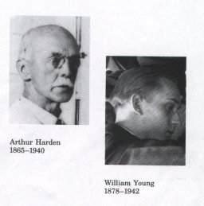
The Preparatory Phase of Glycolysis Requires ATPThe preparatory phase of glycolysis requires the investment of two molecules of ATP and results in cleavage of the hexose chain into two triose phosphates. The realization that phosphorylated hexoses were intermediates in glycolysis came slowly and serendipitously. In 1906, Arthur Harden and William Young sought to test their hypothesis that inhibitors of proteolytic enzymes would stabilize the glucose-fermenting enzymes in yeast extract. They added blood serum (known to contain inhibitors of proteolytic enzymes) to yeast extracts and observed the predicted stimulation of glucose metabolism. However, in a control experiment intended to show that boiling the serum destroyed the stimulatory activity, they discovered that boiled serum was just as effective at stimulating glycolysis. Careful examination of the contents of the boiled serum revealed that inorganic phosphate was responsible for the stimulation. Harden and Young soon discovered that glucose added to their yeast extract was converted into a hexose bisphosphate (the "Harden-Young ester," eventually identified as fructose-1,6-bisphosphate). This was the beginning of a long series of investigations of the role of organic esters of phosphate in biochemistry, which has led to our current understanding of the central role of phosphoryl group transfer in biology.
1. Phosphorylation of Glucose In the first step of glycolysis, glucose is primed for subsequent reactions by its phosphorylation at C-6 to yield glucose-6-phosphate; ATP is the phosphate donor:
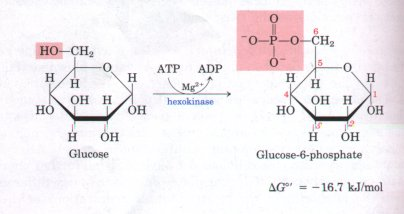
This reaction, which is irreversible under intracellular conditions, is catalyzed by hexokinase. The common name kinase is applied to enzymes that catalyze the transfer of the terminal phosphate group from ATP to some acceptor-a hexose, in the case of hexokinase. Kinases are a subclass of transferases (see Table 8-3).
Hexokinase catalyzes the phosphorylation not only of D-glucose but also of certain other common hexoses, such as D-fructose and D-mannose. Hexokinase, like many other kinases, requires Mg2+ for its activity, because the true substrate of the enzyme is not ATP4- but the MgATP2- complex (see Fig. 13-2). Detailed studies of the hexokinase of yeast show that the enzyme undergoes a profound change in its shape, an induced fit, when it binds the hexose molecule (see Fig. 8-21). Hexokinase is universally present in cells of all types. Hepatocytes also contain a form of hexokinase called hexokinase D or glucokinase, which is more specific for glucose and differs from other forms of hexokinase in kinetic and regulatory properties (p. 432).
2. Conversion of Glucose-6-Phosphate to Fructose-6-Phosphate Phosphohexose isomerase (phosphoglucose isomerase) catalyzes the reversible isomerization of glucose-6-phosphate, an aldose, to yield fructose-6-phosphate, a ketose:
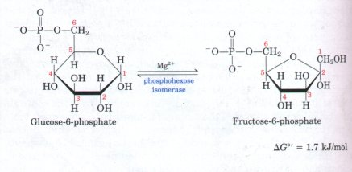
This reaction proceeds readily in either direction, as is predicted from the relatively small change in standard free energy. Phosphohexose isomerase also requires Mg2+ and is specific for glucose-6-phosphate and fructose-6-phosphate.
3 Phosphorylation of Fructose-6-Phosphate to Fructose-1,6-Bisphosphnte
In the second of the two priming reactions of glycolysis, phosphofructokinase-1 catalyzes the transfer of a phosphate group from ATP to fructose-6-phosphate to yield fructose-1,6-bisphosphate:
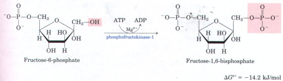
The reaction is essentially irreversible under cellular conditions. This enzyme is called phosphofructokinase-1 (PFK-1) to distinguish it from a second enzyme (PFK-2; Chapter 19) that catalyzes the formation of fructose-2,6-bisphosphate from fructose-6-phosphate.
In some bacteria and protists, and in most or all plants, there is a phosphofructokinase that uses pyrophosphate (PPi), not ATP, as the phosphate group donor in the synthesis of fructose-1,6-bisphosphate:
| Fructose-6-phosphate + PPi | Mg2+ |
fructose-1,6-bisphosphate + Pi |
Phosphofructokinase-l, like hexokinase, is a regulatory enzyme (Chapter 8), one of the most complex known. It is the major point of regulation in glycolysis. The activity of PFK-1 is increased whenever the ATP supply of the cell becomes depleted or when there is an excess of ATP breakdown products, ADP and AMP, particularly the latter. The enzyme is inhibited whenever the cell has ample ATP and when it is well supplied by other fuels such as fatty acids. Fructose-2,6-bisphosphate, structurally similar to the product of this reaction but not an intermediate in glycolysis, is a potent stimulator of both the ATP-dependent and the PPi-dependent enzymes. The regulation of this step in glycolysis is discussed in greater detail later in the chapter.
4.Cleavage of Fructose-1,6-Bisphosphate The enzyme fructose-1,6bisphosphate aldolase, often simply called aldolase, catalyzes a reversible aldol condensation. Fructose-1,6-bisphosphate is cleaved to yield two different triose phosphates, glyceraldehyde-3-phosphate, an aldose, and dihydroxyacetone phosphate, a ketose:
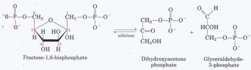
The aldolase of vertebrate animal tissues does not require a divalent cation, but in many microorganisms aldolase is a Zn2+-containing enzyme. Although the aldolase reaction has a strongly positive standard free-energy change in the direction of cleavage, in cells it can proceed readily in either direction. During glycolysis the reaction products (two triose phosphates) are removed quickly by the next two steps, pulling the reaction in the direction of cleavage.
5. Interconuersion of the Ti-iose Phosphates
Only one of the two triose phosphates formed by aldolase-glyceraldehyde-3-phosphate can be directly degraded in the subsequent reaction steps of glycolysis. However, the other product, dihydroxyacetone phosphate, is rapidly and reversibly converted into glyceraldehyde-3-phosphate by the fifth enzyme of the glycolytic sequence, triose phosphate isomerase:
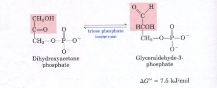
By this reaction C-1, C-2, and C-3 of the starting glucose now become indistinguishable from C-6, C-5, and C-4, respectively (Fig. 14-4).
This reaction completes the preparatory phase of glycolysis, in which the hexose molecule has been phosphorylated at C-1 and C-6 and then cleaved to form, ultimately, two molecules of glyceraldehyde3-phosphate. Other hexoses, such as D-fructose, n-mannose, and n-galactose, are also convertible into glyceraldehyde-3-phosphate, as we shall see later.
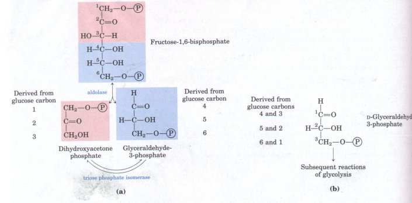
Figure 14-4 Fate of the carbon atoms of glucose in the formation of glyceraldehyde-3-phosphate. (a) The origin of the carbons in the two threecarbon products of the aldolase and triose phosphate isomerase reactions. The end product of the two reactions is two molecules of glyceraldehyde-3phosphate. Each of the three carbon atoms of glyceraldehyde-3-phosphate is derived from either of two specific carbons of glucose (b). The numbering of the carbon atoms of glyceraldehyde-3-phosphate is not identical with the numbering of the carbon atoms of glucose. This is important for interpreting experiments with glucose in which a single carbon is labeled with a radioisotope.
The payoff phase of glycolysis (Fig. 14-2b) includes the energyconserving phosphorylation steps in which some of the free energy of the glucose molecule is conserved in the form of ATP. Remember that one molecule of glucose yields two molecules of glyceraldehyde-3phosphate; both halves of the glucose molecule follow the same pathway in the second phase of glycolysis. The conversion of two molecules of glyceraldehyde-3-phosphate into two of pyruvate is accompanied by the formation of four molecules of ATP from ADP. However, the net yield of ATP per molecule of glucose degraded is only two, because two molecules of ATP were invested in the preparatory phase of glycolysis to phosphorylate the two ends of the hexose molecule.
6.Oxidation of Glyceraldehyde-3-Phosphate to 1,3-Bisphosphoglycerate The first step in the payoff phase of glycolysis is the conversion of glyceraldehyde-3-phosphate to 1,3-bisphosphoglycerate, catalyzed by glyceraldehyde-3-phosphate dehydrogenase:
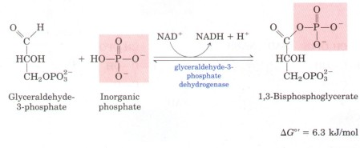
This is the first of the two energy-conserving reactions of glycolysis that eventually lead to the formation of ATP. The aldehyde group of glyceraldehyde-3-phosphate is dehydrogenated, not to a free carboxyl group, as one might expect, but to a carboxylic acid anhydride with phosphoric acid. This type of anhydride, called an acyl phosphate, has a very high standard free energy of hydrolysis (ΔG°' = -49.3 kJ/mol; see Fig. 13-4 and Table 13-6). Much of the free energy of oxidation of the aldehyde group of glyceraldehyde-3-phosphate is conserved by formation of the acyl phosphate group at C-1 of 1,3bisphosphoglycerate.
The acceptor of hydrogen in the glyceraldehyde-3-phosphate dehydrogenase reaction is the coenzyme NAD+ (see Fig. 13-16), the oxidized form of nicotinamide adenine dinucleotide. The reduction of NAD+ proceeds by the enzymatic transfer of a hydride ion ( :H-) from the aldehyde group of glyceraldehyde-3-phosphate to the nicotinamide ring of NAD+, to yield the reduced coenzyme NADH. The other hydrogen atom of the substrate molecule appears in solution as H+ (p. 391).
Oxidation of glyceraldehyde-3-phosphate involves an intermediate in which the substrate is covalently bound to the enzyme (Fig. 14-5a). The aldehyde group of glyceraldehyde-3-phosphate first reacts with the -SH group of an essential Cys residue in the active site of the enzyme. This reaction is homologous with the formation of a hemiacetal (see Fig. 11-6), but in this case the product is a thiohemiacetal. The discovery that glyceraldehyde-3-phosphate dehydrogenase is inhibited by iodoacetate (Fig. 14-5b) was important in the history of research on glycolysis; the addition of this enzyme inhibitor to crude extracts of yeast or muscle caused the accumulation of the hexose phosphates produced in glycolysis, allowing their isolation and identification.
The NADH formed in this step of glycolysis must be reoxidized to NAD+. Cells contain limited amounts of NAD+, and glycolysis would soon come to a halt for lack of NAD+ were the NADH not reoxidized. The reactions in which NAD+ is regenerated anaerobically are described in detail later, in connection with the alternative fates of pyruvate.
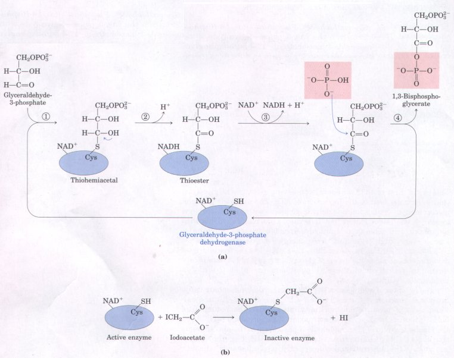
Figure 14-5 (a) A more detailed representation of the glyceraldehyde-3-phosphate dehydrogenase reaction. In step 1, a covalent thiohemiacetal linkage forms between the substrate and the sulfhydryl group of a Cys residue in the enzyme's active site. This enzyme-substrate intermediate is oxidized by NAD+ (step 2), also bound to the active site, converting it into a covalent acyl-enzyme intermediate, a thioester. The enzyme-bound NADH is reoxidized by free NAD+ (step 3). The bond between the acyl group and the thiol group of the enzyme has a very high standard free energy of hydrolysis. In step 4 the thioester bond undergoes phosphorolysis (attack by Pi), releasing the free enzyme and an acyl phosphate product (1,3-bisphosphoglycerate), the formation of which conserves much of the free energy liberated during oxidation of the aldehyde. (b) Iodoacetate is a potent inhibitor of glyceraldehyde-3phosphate dehydrogenase because it forms a covalent derivative of the essential -SH group of the enzyme active site, rendering it inactive.
7. Transfer of Phosphate from 1,3-Bzsphosphoglycerate to ADP
The enzyme phosphoglycerate kinase transfers the high-energy phosphate group from the carboxyl group of 1,3-bisphosphoglycerate tc ADP, forming ATP and 3-phosphoglycerate:
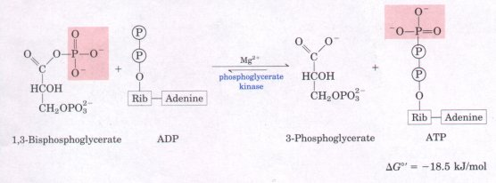
This and the preceding reaction of glycolysis together constitute an energy-coupling process. In these two reactions (steps 6 and 7 ), 1,3-bisphosphoglycerate is the common intermediate; it is formed in the first reaction (which is endergonic), and its acyl phosphate group is transferred to ADP to form ATP in the second reaction (which is strongly exergonic). The sum of these two sequential reactions is
Glyceraldehyde-3-phosphate + ADP + Pi + NAD+3-phosphoglycerate + ATP + NADH + H+ ...... ΔG°' = -12.5 kJ/mol
Thus the overall reaction is exergonic.
Recall from Chapter 13 that the actual free-energy change, ΔG, is determined by the standard free-energy change, ΔG°', and the massaction ratio, which is the ratio [products]/[reactants] (See Eqn 13-3, p. 371). For the first of these two reactions (step 6)
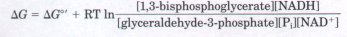
Notice that [H+] is not included in the mass-action ratio for this reaction. In biochemical calculations [H+] is assumed to be a constant (10-7 M), and this constant is included in the definition of ΔG (Chapter 13).
The second reaction (step 7 ), by consuming the 1,3-bisphosphoglycerate produced in the first, reduces the concentration of 1,3-bisphosphoglycerate and thereby reduces the mass-action ratio for the overall process. When this ratio is less than 1.0, its natural logarithm has a negative sign. If the mass-action ratio is very small, the contribution of the logarithmic term can make ΔG strongly negative. This is simply another way of showing that the two reactions are coupled through a shared intermediate.
The outcome of these two coupled reactions, both reversible under cellular conditions, is that the energy released on oxidation of an aldehyde to a carboxylate group is conserved by the coupled formation of ATP from ADP and Pi. The formation of ATP by phosphate group transfer from a substrate such as 1,3-bisphosphoglycerate is referred to as a substrate-level phosphorylation. We shall later contrast substratelevel phosphorylation with respiration-linked phosphorylation (oxidative phosphorylation), which occurs in mitochondria.
8.Converston of 3-Phosphoglycerate to 2-Phosphoglycerate The enzyme phosphoglycerate mutase catalyzes a reversible shift of the phosphate group between C-2 and C-3 of glycerate. Mg2+ is essential for this reaction:
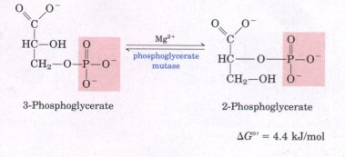
The reaction occurs in two steps (Fig. 14-6). A phosphate group initially attached to a His residue in the active site of the enzyme is transferred to the hydroxyl group at C-2 of 3-phosphoglycerate, forming 2,3-bisphosphoglycerate. The phosphate at C-3 of 2,3-bisphosphoglycerate is then transferred to the same His residue of the enzyme, producing 2-phosphoglycerate and regenerating the phosphorylated enzyme. Because the enzyme is initially phosphorylated by phosphate transfer from 2,3-bisphosphoglycerate, this compound functions as a cofactor; it is required in small quantities to initiate the catalytic cycle, and is continuously regenerated by that cycle.
| Essentially the same mechanism is employed by the enzyme phosphoglucomutase, described below, in the conversion of glucose-1-phosphate into glucose-6-phosphate. In that reaction, glucose-1,6-bisphosphate serves as the essential cofactor. The general name mutase is often given to enzymes that catalyze the transfer of a functional group from one position to another on the same molecule. Mutases are a subclass of isomerases, enzymes that interconvert stereoisomers or structural or positional isomers (see Table 8-3). | 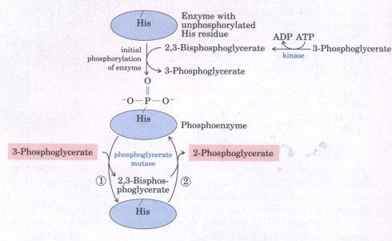 Figure 14-6 Mechanism of the phosphoglycerate mutase reaction. The enzyme is initially phosphorylated on a His residue by transfer of a phos hate group from 2,3-bisphosphoglycerate. In step 1 of the catalytic reaction, the phosphoenzyme transfers its phosphate group to 3-phospho lycerate forming 2,3-bisphosphoglycerate. In step 2 the phosphate group at C-3 of 2,3-bisphosphoglycerate is transferred to the same His residue on the enzyme, producing 2-phosphoglycerate and regenerating the phosphoenzyme. The 2,3-bisphosphoglycerate required initially to phosphorylate the enzyme is formed from 3-phosphoglycerate by a specific ATPdependent kinase; it is then regenerated in step l of each catalytic cycle. |
9 Dehydration of 2-Phosphoglycerate to Phosphoenolpyruuate The second glycolytic reaction that generates a compound with high phosphate group transfer potential is catalyzed by enolase. This enzyme promotes reversible removal of a molecule of water from 2-phosphoglycerate to yield phosphoenolpyruvate:
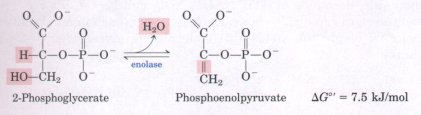
Despite the relatively small standard free-energy change in this reaction, there is a very large difference in the standard free energy of hydrolysis of the phosphate groups of the reactant and product. That of 2-phosphoglycerate (a low-energy phosphate compound) is -17.6 kJ/mol and that of phosphoenolpyruvate (a super high-energy phosphate compound) is -61.9 kJ/mol (see Fig. 13-3 and Table 13-6). Although 2-phosphoglycerate and phosphoenolpyruvate contain nearly the same total amount of energy, the loss of the water molecule from 2-phosphoglycerate causes a redistribution of energy within the molecule; the standard free-energy change accompanying hydrolysis of the phosphate group is much greater for phosphoenolpyruvate than for 2-phosphoglycerate.
10 Transfer of the Phosphate Group from Phosphoenolpyruvate to ADP The last step in glycolysis is the transfer of the phosphate group from phosphoenolpyruvate to ADP, catalyzed by pyruvate kinase:
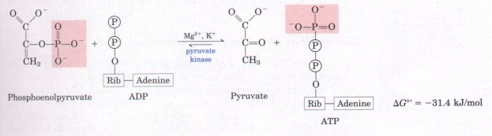
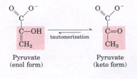
The Overall Balance Sheet Shows a Net Gain of ATP
We can now construct a balance sheet for glycolysis to account for (1) the fate of the carbon skeleton of glucose, (2) the input of Pi and ADP and the output of ATP, and (3) the pathway of electrons in the oxidation-reduction reactions. The left-hand side of the following equation shows all the inputs of ATP, NAD+, ADP, and Pi (consult Fig. 14-2), and the right-hand side shows all the outputs (keep in mind that each molecule of glucose yields two molecules of glyceraldehyde-3-phosphate):
Glucose + 2ATP + 2NAD+ + 4ADP + 2Pi  2 pyruvate + 2ADP + 2NADH + 2H+ + 4ATP + 2H2O
2 pyruvate + 2ADP + 2NADH + 2H+ + 4ATP + 2H2O
If we cancel out common terms on both sides of the equation, we get the overall equation for glycolysis under aerobic conditions:
Glucose + 2NAD+ + 2ADP + 2Pi 2 pyruvate +
2NADH + 2H+ + 2ATP + 2H2O
The two molecules of NADH formed by glycolysis in the cytosol are, under aerobic conditions, reoxidized to NAD+ by transfer of their electrons to the respiratory chain, which in eukaryotic cells is located in the mitochondria. Here these electrons are ultimately passed to O2:
2NADH + 2H+ + O2
2NAD+ + 2H2O
Electron transfer from NADH to O2 in mitochondria provides the energy for synthesis of ATP by respiration-linked phosphorylation (Chapter 18).
In the overall process, one molecule of glucose is converted into two molecules of pyruvate (the pathway of carbon). Two molecules of ADP and two of P; are converted into two molecules of ATP (the pathway of phosphate groups). Four electrons (two hydride ions) are transferred from two molecules of glyceraldehyde-3-phosphate to two of NAD+ (the pathway of electrons).
Intermediates Are Channeled between Glycolytic Enzymes
| Although the enzymes of glycolysis
usually are described as soluble components of the
cytosol, there is growing evidence that within the cell
these enzymes exist as multienzyme complexes. The classic
approach of enzymology-the purification of individual
proteins from extracts of broken cells-was applied with
great success to the enzymes of glycolysis; we have noted
that each of the enzymes has been purified to
homogeneity. However, the first casualty of cell breakage
is higher-level organization within a cell-the
noncovalent and reversible interaction of one protein
with another, or of an enzyme with some structural
component such as a membrane, microtubule, or
microfilament. When cells are broken open, their
contents, including enzymes, undergo dilution by a factor
of a hundred or a thousand (Fig. 14-7). |
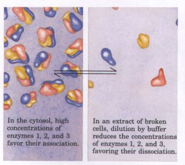 Figure 14-7 Dilution of a solution containing a noncovalent protein complex favors dissociation of the complex into its constituents.
|
| When the purified enzymes of glycolysis
are combined in vitro at relatively high concentrations,
they form specific, functional aggregates, which may
reflect their true state inside cells. Several types of
evidence suggest that such complexes act in cells to
ensure efficient passage of the product of one enzyme to
the next enzyme in the pathway for which that product
serves as substrate. Kinetic evidence for the channeling
of 1,3-bisphosphoglycerate from
glyceraldehyde-3-phosphate dehydrogenase to
phosphoglycerate kinase without entering solution (Fig.
14-8) is corroborated by physical evidence that these two
enzymes form stable, noncovalent complexes. There is
similar evidence for channeling of intermediates between
other glycolytic enzymes, such as
glyceraldeyde-3-phosphate from aldolase to
glyceraldehyde-3-phosphate dehydrogenase. Furthermore, certain glycolytic enzymes form speciiic noncovalent complexes with structural components of the cell, which may serve to organize reaction sequences and assure efficient transfer of intermediates between cellular compartments. Certain glycolytic enzymes bind to microtubules or to actin microfilaments (see Fig. 2-18), bringing those enzymes into close association and holding them in a specific region of the cytoplasm. Hexokinase binds specifically to the outer membrane of mitochondria. This association may allow ATP produced within the mitochondrion to move directly to the catalytic site of hexokinase without entering, and being diluted by, the cytosol. There is strong evidence for substrate channeling through multienzyme complexes in other metabolic pathways, and it seems likely that many enzymes now thought of as "soluble" actually function in the cell as highly organized complexes that channel intermediates. |
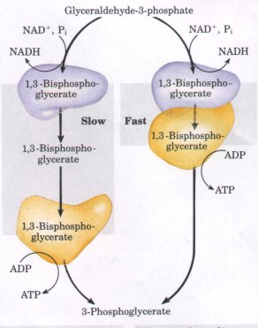
Figure 14-8 Channeling of a substrate between two enzymes in the glycolytic pathway. When glyceraldehyde-3-phosphate dehydrogenase (blue) and 3-phosphoglycerate kinase (yellow) are combined in vitro, they catalyze the two-step conversion of glyceraldehyde-3-phosphate to 3-phosphoglycerate (Figs. 14-5, 14-6) at a rate greater than the rate at which the first step is catalyzed in the presence of the first enzyme only. Apparently the transfer of 1,3-bisphosphoglycerate from the surface of the dehydrogenase to that of the kinase is faster than the dissociation of 1,3-bisphosphoglycerate from the dehydrogenase into the surrounding medium (which occurs in the absence of the kinase ). Physical studies show that the two enzymes can form a stable complex, as is required for substrate channeling between them. |
Glycolysis Is under Tight Regulation
During his studies of the fermentation of glucose by yeast, Louis Pasteur discovered that both the rate and the total amount of glucose consumption were many times greater under anaerobic conditions than under aerobic conditions. Later studies of muscle showed the same large difference in the rate of glycolysis under anaerobic and aerobic conditions. The biochemical basis of this "Pasteur effect" is now clear. The ATP yield from glycolysis under anaerobic conditions (2 ATP per molecule of glucose) is much smaller than that from the complete oxidation of glucose to COz under aerobic conditions (36 or 38 ATP per glucose molecule; see Chapter 18). About 18 times as much glucose must therefore be consumed anaerobically as aerobically to yield the same amount of ATP.
The flux of glucose through the glycolytic pathway is regulated to achieve constant ATP levels (as well as adequate supplies of glycolytic intermediates that serve biosynthetic roles). The required adjustment in the rate of glycolysis is achieved by the regulation of two glycolytic enzymes: phosphofructokinase-1 and pyruvate kinase. Both enzymes are regulated allosterically by second-to-second fluctuations in the concentration of certain key metabolites that reflect the cellular balance between ATP production and consumption. We return to a more detailed discussion of the regulation of glycolysis later in the chapter.